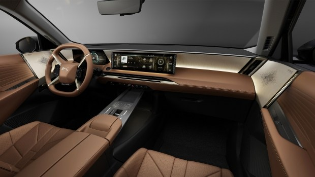
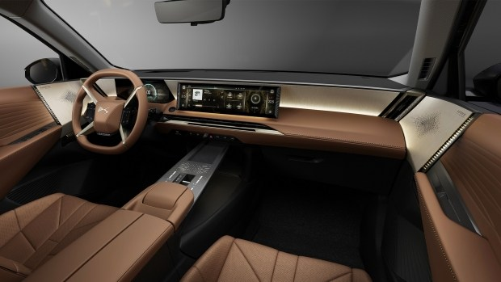

Yamaha YZF-R6 Race
Це ідеальний спортивний мотоцикл з двигуном 600 куб. см, який роками домінує в гонках WorldSSP. Як і всі моделі серії R, він забезпечує вищий рівень продуктивності. R6 RACE оснащений обтекачем в агресивному стилі з переднім повітрозаборником у вигляді букви М. Він забезпечує максимальну аеродинамічну ефективність для більшої швидкості, а компактне шасі Deltabox, алюмінієвий бак і тонкий магнієвий підрамник гарантують щільне прилягання до мотоцикла.
.jpg) 

Новий DS 8 - неповторний флагман DS Automobiles презентовано
12 грудня 2024 року DS Automobiles офіційно представив свій новий флагман - DS N°8. Цей купе-кросовер об'єднує витончену естетику, передові технології та вражаючий запас ходу, пропонуючи клієнтам неперевершений комфорт у подорожах. DS N°8 відкриває нову сторінку в історії бренду, ставши першим автомобілем із новою дизайнерською філософією, що підкреслює гармонію між динамікою та спокоєм. Ця модель доступна виключно у 100% електричній версії, символізуючи прагнення бренду до сталого майбутнього. Назва «N°8» відображає ідею нескінченності, гармонії та досконалості, що яскраво ілюструє новий підхід до ідентичності DS Automobiles.
Кросовер Xiaomi YU7 розсекретили на офіційних фото
Автомобільну лінійку Xiaomi розширено - до седана SU7 невдовзі приєднається кросовер YU7. Його продажі стартують у червні-липні 2025 року за ціною від 250 000 до 350 000 юанів ($34 000 - 48 000), а поки опубліковано офіційні фото авто. Про це повідомляє сайт CarNewsChina. Новий Xiaomi YU7 - обтічний електричний купе-кросовер, який своїм дизайном дуже нагадує Ferrari Purosangue. У нього довгий капот, розширені «плечі» задніх крил та вигнута віконна лінія. Виражений «ніс» поєднується зі стріловидними фарами. За розмірами кросовер Xiaomi також можна порівняти з Ferrari.
BMW створила новий мотоцикл на згадку про модель 70-х років
Мотоциклетний підрозділ BMW Motorrad анонсував яскраву новинку в стилі ретро - BMW R 12 S. Модель створена за мотивами культового мотоцикла 70-х років - BMW R 90 S. Півстоліття тому над зовнішністю моделі R 90 S працював шеф-дизайнер компанії Ганс Мут (Hans Muth), який запропонував клієнтам перший у світі серійний мотоцикл з обтічником, стильним зовнішнім виглядом і червоними емблемами «90» на моторі.
BMW Motorrad представив родстер та спортивний мотоцикли
BMW Motorrad виводить на ринок нові версії двох мотоциклів: родстер BMW F 900 R та спорта F 900 XR. Обидва мотоцикли оснащені інноваційними технологіями BMW Motorrad, включаючи передові системи безпеки, комфортні функції для водія та сучасні двигуни.
John Deere випустив позашляховий пікап Gator
Компанія John Deere, відома своїми комбайнами, оголосила про початок випуск нового дизельного позашляховика Gator XUV 875M. Новачок позиціюється як універсальний кросовер для приватних господарств у сільській місцевості, так і для фермерських та комунальних потреб.